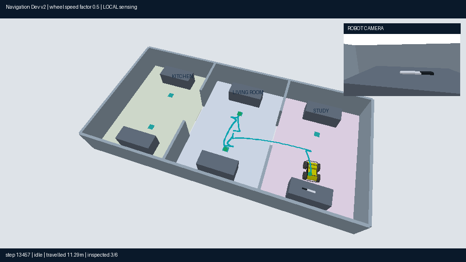
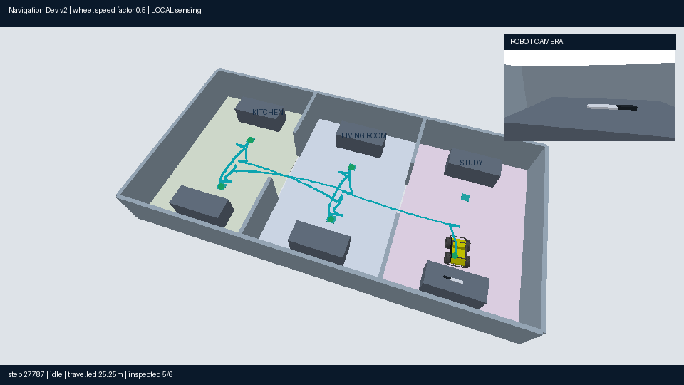
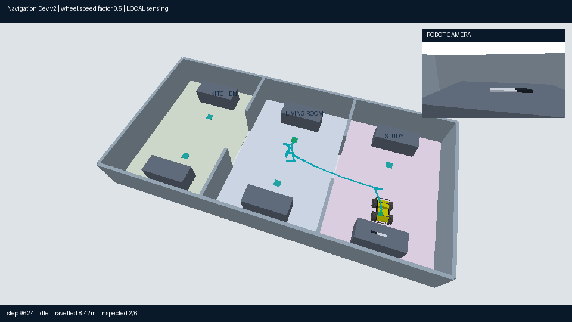
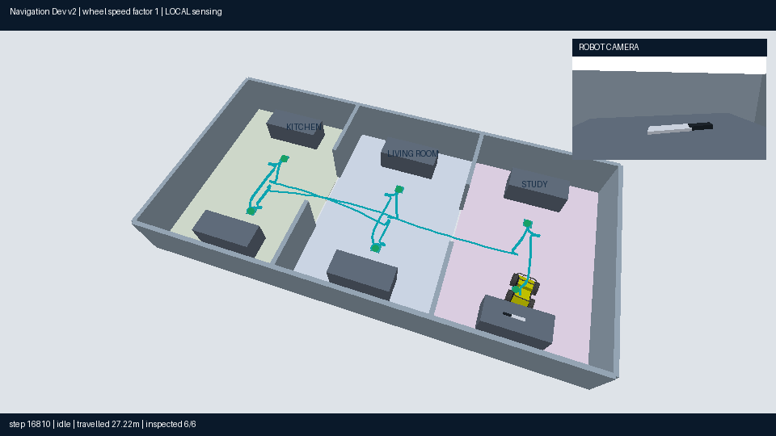

Real API × wheel-driven PyBullet · controlled search and reply costs
| method | successes | episodes | mean_burden | mean_operational_s | total_api_latency_s |
|---|---|---|---|---|---|
| llm_noask | 4 | 4 | 0.000 | 56.373 | 16.339 |
| llm_gate | 4 | 4 | 0.500 | 60.633 | 35.429 |
| jev_gate | 4 | 4 | 0.500 | 94.478 | 32.037 |
Operational seconds: simulated motion + actual reply waiting + 5 s per slot. API latency is summed separately. One map group and one seeded target; engineering pilot only.
| backend | contract | payload | states | asks | reference_matches | mean_nominal_regret_s |
|---|---|---|---|---|---|---|
| deepseek | cost_exclusive | raw | 6 | 0 | 2 | 5.561 |
| deepseek | cost_exclusive | summary | 6 | 0 | 2 | 5.561 |
| deepseek | overlap_control | raw | 6 | 0 | 2 | 5.561 |
| deepseek | overlap_control | summary | 6 | 0 | 2 | 5.561 |
| jev | cost_exclusive | raw | 6 | 0 | 2 | 5.561 |
| jev | cost_exclusive | summary | 6 | 0 | 2 | 5.561 |
| jev | overlap_control | raw | 6 | 0 | 2 | 5.561 |
| jev | overlap_control | summary | 6 | 0 | 2 | 5.561 |
Reference values use approximate public costs. They are withheld from models. These gate-only results are not task success rates.
| sample | method | success | burden | distance_m | motion_sim_s | reply_wait_wall_s | operational_s | first_ask_after_checks |
|---|---|---|---|---|---|---|---|---|
| nav2_s050_d01_study_shelf | jev_gate | True | 1 | 25.247 | 114.779 | 1.004 | 120.783 | 4 |
| nav2_s050_d01_study_shelf | llm_gate | True | 1 | 11.289 | 55.071 | 1.005 | 61.076 | 2 |
| nav2_s050_d01_study_shelf | llm_noask | True | 0 | 14.123 | 74.438 | 0.000 | 74.438 | — |
| nav2_s050_d30_study_shelf | jev_gate | True | 1 | 25.247 | 114.779 | 30.000 | 149.779 | 4 |
| nav2_s050_d30_study_shelf | llm_gate | True | 1 | 8.425 | 39.100 | 30.005 | 74.105 | 1 |
| nav2_s050_d30_study_shelf | llm_noask | True | 0 | 14.123 | 74.438 | 0.000 | 74.438 | — |
| nav2_s100_d01_study_shelf | jev_gate | True | 0 | 27.216 | 69.042 | 0.000 | 69.042 | — |
| nav2_s100_d01_study_shelf | llm_gate | True | 0 | 13.458 | 38.308 | 0.000 | 38.308 | — |
| nav2_s100_d01_study_shelf | llm_noask | True | 0 | 13.458 | 38.308 | 0.000 | 38.308 | — |
| nav2_s100_d30_study_shelf | jev_gate | True | 0 | 13.458 | 38.308 | 0.000 | 38.308 | — |
| nav2_s100_d30_study_shelf | llm_gate | True | 0 | 27.216 | 69.042 | 0.000 | 69.042 | — |
| nav2_s100_d30_study_shelf | llm_noask | True | 0 | 13.458 | 38.308 | 0.000 | 38.308 | — |




Raw summary JSON · Episode CSV · Ablation CSV · Preregistered plan
All 48 gate-only outputs were CONTINUE. Six matched public states did not show a decision-level ablation effect. Actual full-episode questions are recorded separately; this is one map and one target, not independent-group evidence.
Shared Planner can produce different station orders even at temperature 0. Total execution-cost differences cannot all be attributed to Gate timing.
Technical incident retained: 12 launches aborted before motion due to a missing JSON-mode marker. Six launch-stage calls plus 48 ablation calls are included in 172/200 total requests. After a format-only repair: 12 valid physical runs; 24 combined registrations. No gate/threshold tuning.
Detailed interpretation · Preservation/protocol audit · Unpaid physical policy anchors